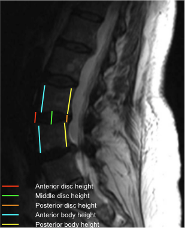

Adapted from: Feger J, Er A, Yap J, et al. Lumbar spine protocol (MRI). Reference article, Radiopaedia.org (Accessed on 01 Jan 2026) https://doi.org/10.53347/rID-147093
1) Description of Measurement
The Disc-Height Index (DHI) is a normalized metric that quantifies intervertebral disc height relative to adjacent vertebral body height. By expressing disc height as a ratio, DHI minimizes magnification and patient-size variability and serves as a sensitive marker for disc degeneration, collapse, and segmental instability.
2) Instructions to Measure
3) Normal vs. Pathologic Ranges
Key points:
4) Important References
Chen X, Sima S, Sandhu HS, et al. Radiographic evaluation of lumbar intervertebral disc height index: An intra and inter-rater agreement and reliability study. J Clin Neurosci. 2022 Sep;103:153-162. doi: 10.1016/j.jocn.2022.07.018.
Snowden R, Miller J, Saidon T, et al. Does index level sagittal alignment determine adjacent level disc height loss? J Neurosurg Spine. 2019 Jun 21;31(4):579-586. doi: 10.3171/2019.4.SPINE181468.
Chen IR, Wei TS. Disc height and lumbar index as independent predictors of degenerative spondylolisthesis in middle-aged women with low back pain. Spine (Phila Pa 1976). 2009 Jun 1;34(13):1402-9. doi: 10.1097/BRS.0b013e31817b8fbd.
5) Other info....
DHI is useful for longitudinal studies to track disc degeneration progression.
Should be reported together with: